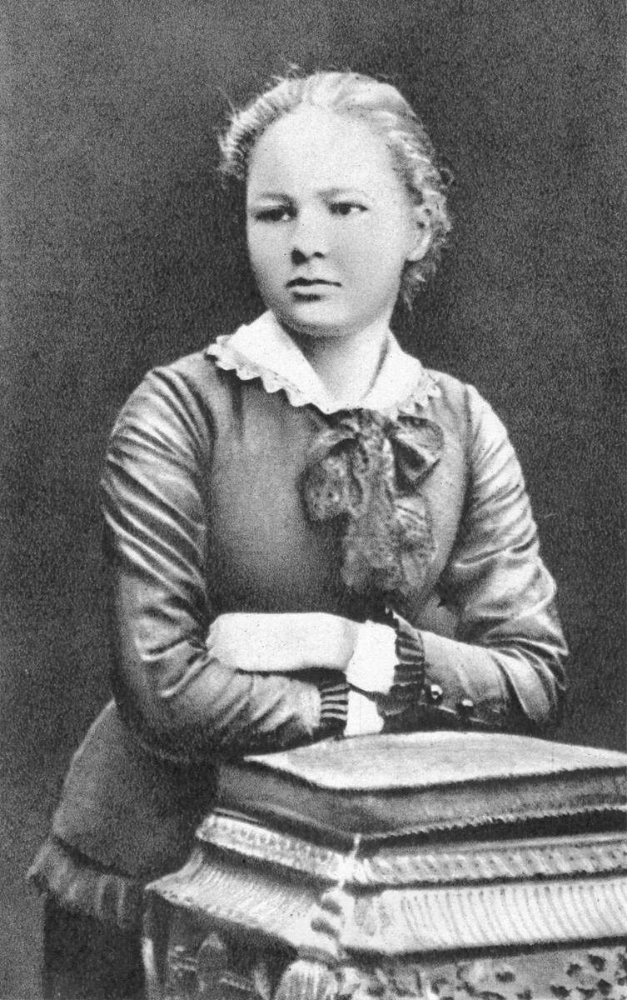
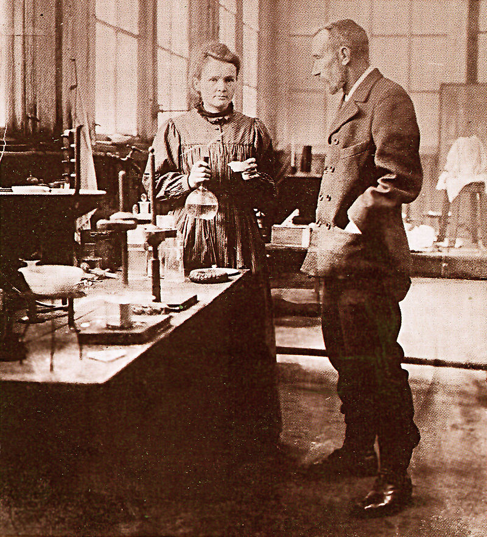

Биография
Мария Кюри-Склодовская родилась 7 ноября 1867 года в Варшаве в семье учителя физики. Мария окончила среднюю школу в Варшаве с золотой медалью, после чего восемь лет работала репетитором и гувернанткой. В лаборатории при Музее промышленности и сельского хозяйства в Варшаве она прошла подготовительный этап в исследованиях по химии и физике. В 1891-95 гг. училась на факультете естественных наук Парижского Университета Сорбонна, окончила его со степенью бакалавра физических и математических наук. В доме профессора Ковальского познакомилась с Пьером Кюри, за которого вышла замуж в 1895 году и приняла французское гражданство. Первая публикация Кюри-Склодовской вышла в свет в 1898 году и обратила внимание ученых на лучи Беккереля.
1897 год принес новые открытия. Число работ на тему радиоактивности значительно увеличилось. В 1903 г. Беккерель и супруги Кюри были удостоены Нобелевской премии по физике. После преждевременной трагической смерти Пьера Кюри в 1906 г. Мария Кюри-Склодовская самостоятельно продолжала исследования. В 1911 г. была награждена Нобелевской премией по химии.
Мария Кюри-Склодовская занималась не только научной деятельностью, но и общественной, а также организационной. Сотрудничала при создании радиологической лаборатории Варшавского научного общества. В результате ее стараний в 1912 году был учрежден Радиевый институт в Париже, в котором проводились исследования физических и химических свойств радиоактивных элементов; основала также биологическое отделение. Во время Первой мировой войны Мария, будучи руководителем службы рентгена при министерстве военных дел, организовала около 200 новых или обновленных радиологических блоков, а также передала армии 20 передвижных рентгеновых амбулаторий с оборудованием из собственной лаборатории. Благодаря стараниям Марии Кюри-Склодовской впервые в школе медсестер во Франции было открыто радиологическое отделение (1916). До конца войны под руководством ученой было обучено 150 радиологических лаборанток. Лауреатка Нобелевской премии дала начало отделению радиотерапии в Радиевом институте (1916). Мария Кюри-Склодовская делилась своим опытом и знаниями в области радиологии с американскими студентами медицины, пребывающими на фронте в Европе. Подобные курсы по радиологии для молодых рентгенологов со всей Европы Кюри-Склодовская проводила в течение первых двух лет после войны. Огромную помощь в этом оказывала ее дочь Ирена. После Первой мировой войны в возрожденной столице Польши началось строительство медицинского и научного центра Радиевого института, на открытии которого в 1931 году Мария Кюри-Склодовская присутствовала лично. В 1947 г. была основан филиал в Гливицах, а в 1951 г. – в Кракове.
В результате долговременной работы с радием, Мария Кюри-Склодовская стала одной из первых жертв лучевой болезни. По данным документов, умерла 4 июля 1934 года от апластической анемии, в связи с панцитопенией, причиной которых было ионизирующее излучение.
Научная деятельность
В конце 1897 года Мария Кюри завершила исследование по магнетизму и начала подыскивать тему для диссертации. В это время супруги Кюри познакомились с физиком Анри Беккерелем, который открыл, что урановые соединения испускают глубоко проникающее излучение. По мнению Беккереля, оно было внутренним свойством урана в отличие от рентгеновского излучения, порождаемого внешним воздействием. Мария заинтересовалась темой и начала работу над докторской диссертацией, посвящённой исследованию этого явления.
В результате исследования удалось открыть радиоактивность ряда веществ, в том числе тория. Также Мария Кюри заметила, что лучи были свойством, присущим определённому элементу независимо от температуры, чистоты его состава и внешнего облучения. Доклад на заседании Французской академии наук об этих открытиях сделал 18 июля 1898 от имени супругов Анри Беккерель, так как Кюри не были членами академии. Поскольку в выделенном веществе содержалось большое количество висмута, свойства которого были очень схожими со свойствами нового элемента, Мария с Пьером предположили, что новый элемент находится в той же группе периодической таблицы. Однако висмут не был радиоактивным, поэтому супруги Кюри предположили существование нового элемента, который они предложили назвать полонием в честь Польши, родины Марии Склодовской.
В 1900 году немецкий дантист Отто Валькхоф заметил, что если прикладывать ткань, пропитанную раствором радия, к коже два раза на 20 минут, появляется воспаление, длящееся две недели. Немецкий химик Фридрих Оскар Гизель заметил, что если приставить закрытый глаз к закрытой коробке, содержащей соли радия, на сетчатке виден свет. Также он держал 270 мг соли радия в руке в течение двух часов, после чего у него появились ожоги, которые заживали две недели. Беккерель и супруги Кюри также получали ожоги и отмечали воздействие радиоактивных материалов на живые ткани. Беккерель заметил влияние радиации, получив ожог от пробирки с радием. Пьер Кюри намеренно облучал руку, чтобы зафиксировать происходящие изменения. На руках шелушилась и отслаивалась кожа, ощущались боли, мешавшие свободно писать. Мария страдала анемией и потеряла вес во время исследований, Пьер почувствовал боли в ногах и спине, которые врачи классифицировали как ревматизм, а затем как неврастению. Был сделан вывод о зависимости степени поражения от активности излучения и времени воздействия на ткани. Опыты по воздействию радиации на живые ткани, проводившиеся медиками в 1900—1906 годах, положили начало радиотерапии, которую во Франции называли кюритерапией, по имени первооткрывателя. Облучением радием начали лечить волчанку и стригущий лишай, начались исследования по лечению рака. Супруги Кюри долгое время не задумывались над возможным негативным действием радиации. Пьер обнаружил смертоносное воздействие только после опытов над мышами, которым вживляли капсулы с солями радия. Когда в конце 1960-х годов родственники решили передать весь архив супругов Кюри — статьи, книги, дневники, письма — в Национальную библиотеку Франции, было установлено, что архив учёных всё ещё обладает опасной для человека радиоактивностью. В связи с этим каждый документ поместили в специальный кофр, а наиболее радиоактивные отвезли в университет в Орсе, чтобы провести их санацию